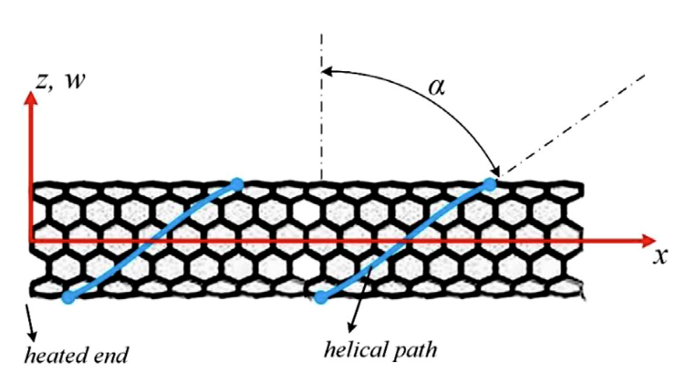

Dynamics of carbon nanotubes under thermally induced nanoparticle transport on helical tracks
Applied Mathematical Modelling, 93, pp.684-707, 2021. Journal Article

Abstract
The mechanism of nanoparticle transport inside carbon nanotubes is taken into account to investigate the dynamics of single-walled carbon nanotubes carrying a nanoparticle. The motion of the nanoparticle is on helical tracks, which is induced by temperature difference in the nanotube, with main characteristics such as axial, and angular velocities and pitch angle. The helical motion is modeled based on constrained and unconstrained simulations. In the case of the former, the axial velocity is constant, however, in the latter simulation, the axial velocity is time-variant and stop-and-go events with simultaneous changes in the rotation direction are considered as random uncertainty in the system. Once the helical motion is clarified, the dynamic behavior of the nanotube acted upon by a moving nanoparticle is investigated for simply supported boundary conditions and stability analysis is performed to obtain the critical velocities as well as critical temperature differences based on Floquet theorem. For the case of the system with random uncertainty, the statistical properties as well as confidence and prediction intervals of the dynamic response are also studied by Monte-Carlo simulation. The results highlight the importance of the helical motion mechanism of the moving nanoparticle and the random uncertainty in the system.